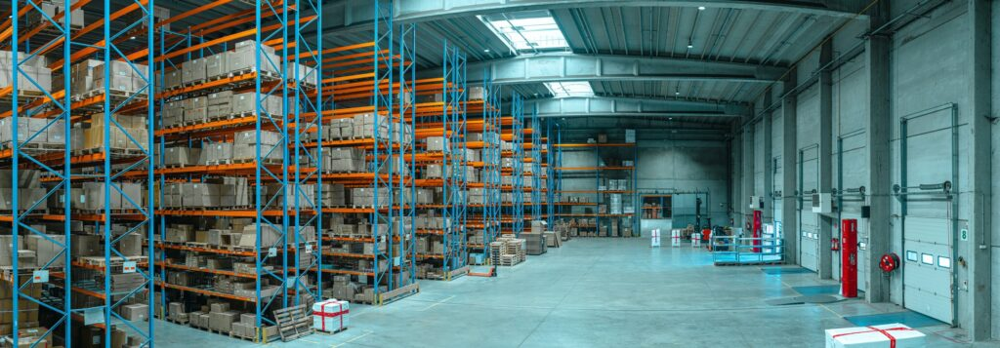

Küresel tedarik zincirinde hangi ülkeler daha fazla risk altında?
Küresel tedarik ağından gelen firma bazında verileri kullanarak Complexity Science Hub (CSH) araştırmacıları, diğer ülkelerdeki firma iflasları nedeniyle üretim kayıplarına maruz kalan ülkelerin maruziyetlerini niceliksel olarak ölçtüler. Bulgularına göre, zengin ülkeler sadece diğer yüksek gelirli ülkelerden kaynaklanan tedarik zinciri kesintilerine maruz kalırken, fakir ve gelişmekte olan ülkeler tüm ülkelerden kaynaklanan şoklara maruz kalmaktadır.

Verilerimiz Standard & Poor’s Capital IQ platformundan geliyor, bu platform dünyanın en büyük ve en önemli şirketlerinin çoğu hakkında bilgi içeriyor. Bu verilerde 206 ülkede yaklaşık 230.000 şirket temsil edilmekte ve küresel tedarik zinciri ağının iyi bir resmini sunmaktadır,” diye açıklıyor CSH bilim insanı Tobias Reisch. Reisch, “Neredeyse 1 milyon kurumsal ilişki hakkında veriler de dahil edilmiş olup, bu veriler ülkeler arasındaki mal ve hizmet akışını detaylandırmaktadır,” diye ekliyor, Nature Communications’da yayımlanan çalışmanın baş yazarlarından biri olan Reisch.
Araştırmacılar, bir tedarik zinciri kesintisi —ister Baltimore Köprüsü’nün çökmesi gibi bir ulaşım altyapısı sorunu, isterse Tayvan’da bir deprem gibi bir doğal afet olsun— durumunda ne olacağını bilmek istediler. Daha sonra ağlarda mal ve hizmet akışındaki kesintileri—ekonomik şokları simüle ettiler ve bu şokların ağlar içinde nasıl yayıldığını gözlemlediler. “Küresel tedarik ağındaki bir firmanın tamamen kesintiye uğramasının etkilerini inceleyerek, yüksek gelirli ülkelerin bölgelerinin ötesinde önemli maruziyetler yarattığını ve böylece sistemik risk ihraç ettiklerini keşfettik,” diyor çalışmanın kıdemli yazarı ve CSH başkanı Stefan Thurner. Buna karşılık, “düşük gelirli ülkeler yüksek maruziyet değerlerinden dolayı orantısız şekilde güçlü bir şekilde etkilenmektedir.” Reisch, “Başlangıçta ekonomik şokların daha zengin ve sanayileşmiş ülkeleri etkileyeceğini düşündük çünkü bu ülkeler küresel değer zincirlerine daha fazla dahil. Ancak durum böyle olmadı. Daha az ekonomik şok alıyorlar, ancak daha fazla şok yaratıyorlar,” diyor. “Bir bakıma, bu ülkeler daha çeşitlendirilmiş gibi görünüyor veya tedarik ağı içinde farklı pozisyonlarda. Aslında, maruz kaldıklarından daha fazla başka ülkeleri maruz bırakıyorlar.”
Çalışmanın sonuçları ayrıca, diğer uluslara maruziyetin bölgesel düzeyde oldukça yapılandırılmış olduğunu ortaya koymaktadır. Bu nedenle, bir ülkedeki şirketler kendi sınırları içindeki şoklara en savunmasızdır. “Bu, şirketlerin yerel veya ulusal tedarik zincirlerine tipik olarak güçlü bir şekilde yerleştirildiğini gösteriyor. Aynı durum bölgeler için de geçerli: Afrikalı şirketler, Afrika’da bulunan diğerlerine daha yakınken, Avrupalı firmalar Eski Kıta’da bulunanlara daha yakın bağlara sahiptir,” diye açıklıyor Reisch.
Bulgular, ülkeler arasındaki tedarik ağlarındaki yapısal eşitsizliğin önemli olduğunu öne sürüyor, CSH araştırmacılarına göre. “Maruziyet eşitsizliği, küresel tedarik ağındaki firma düzeyindeki yapıdan kaynaklanıyor, bu nedenle farklı gelir düzeylerindeki ülkelerin üretim ve ticaret ilişkilerine nasıl girdiğini ve bunun daha az risk maruziyeti yaratarak nasıl gerçekleşebileceğini anlamak önemlidir,” diye öneriyor yazarlar. “Uluslararası tedarik ağları için ‘sistemik risk vergisi’ gibi bir uygulamanın tanıtılması, tedarik zincirlerini aynı anda daha dayanıklı, adil ve sürdürülebilir hale getirmek için olası bir strateji olabilir. Burada daha önce finansal piyasaları daha dayanıklı hale getirmek için geliştirdiğimiz fikirleri takip edebiliriz. Ancak, tedarik zincirleri için durum daha karmaşık ve böyle bir vergilendirme düzeninin nasıl görünebileceğine dair detayları doğru şekilde anlamak için daha fazla araştırmaya ihtiyaç var,” diyor Thurner.
Çalışmanın yazarları, küresel olarak yayılan tedarik zinciri tehditlerini takip edebilmek ve bunları bireysel şirketler için gerçekten kullanılabilir ve yardımcı hale getirebilmek için daha iyi verilerle granüler ekonomik verilerin toplanması ve izlenmesi için küresel bir çaba gerektiğini vurguluyor. Bu, şirketlerin ve hükümetlerin küresel olarak yayılan tedarik şoklarına hazırlanmasını ve önlem almasını sağlayacaktır, CSH araştırmacılarına göre.
Kaynak: Abhijit Chakraborty et al, Inequality in economic shock exposures across the global firm-level supply network, Nature Communications (2024). DOI: 10.1038/s41467-024-46126-w